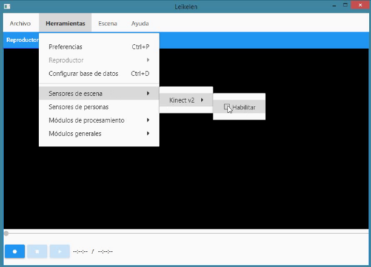

1.12.2. CUYY: Gestionar Posturas
Para habilitar el sensor kinect, debe ir al menú "Herramientas", "Sensores de escena", "Kinect
v2" y hacer click sobre "Habilitar", tal y como se ve en la imagen 1.38.
Figura 1.38: CUYY-01-HabilitarKinect
Cada postura se detecta en base a un modelo entrenado de maquina de aprendizaje. Los mode-
los se almacenan en archivos de extensión "gbd". Por lo tanto cuando se habla de gestionar posturas,
se habla de gestionar estos archivos. Si se desea detectar un nuevo tipo de postura, primero se debe
generar uno de estos modelos, lo cual se realiza con la herramienta VGB (Visual Gesture Builder),
y luego se debe agregar dicho archivo en la aplicación. Haciendo click en el menú "Herramientas",
y luego en "Módulos generales", "Configuración de gestos" y "Posturas", se accede a la ventana
donde para ver, agregar, editar y eliminar posturas, tal como se observa en la imagen 1.39.
23